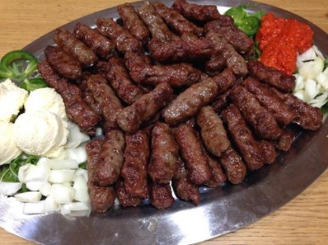

Elektro Šoker

Plata pod nazivom “Elektro Šoker” nije za one slabog apetita – to je pravo mesno iskustvo koje “udara” snažno, baš kao što ime sugeriše. Već na prvi pogled vidi se obilje sočnih, svježe pečenih ćevapa, pažljivo složenih jedan preko drugog, stvarajući primamljivu i bogatu kompoziciju koja mami svakog ljubitelja roštilja.
Ćevapi su savršeno pečeni – spolja blago hrskavi, sa zapečenom koricom koja zadržava sve sokove unutar mesa, dok su iznutra mekani i puni ukusa. Njihova aroma, dobijena pečenjem na roštilju, širi se i prije nego što plata stigne na sto, najavljujući pravi gastronomski “udar”.
Ono što dodatno pojačava doživljaj ove plate jesu prilozi koji dolaze uz meso. Svjeckani luk daje potrebnu oštrinu i svježinu, kajmak donosi kremastu punoću, dok ajvar unosi blagu slatkoću i pikantnost. Sve zajedno čini savršen balans ukusa koji upotpunjuje svaki zalogaj.
“Elektro Šoker” nije samo obrok – to je izazov, druženje i uživanje u hrani koje se dijeli s drugima. Idealna je za veća društva i sve one koji žele da probaju nešto konkretno, zasitno i nezaboravno. Ovo je plata koja ne ostavlja ravnodušnim – jednom kad je probate, teško se zaboravlja.